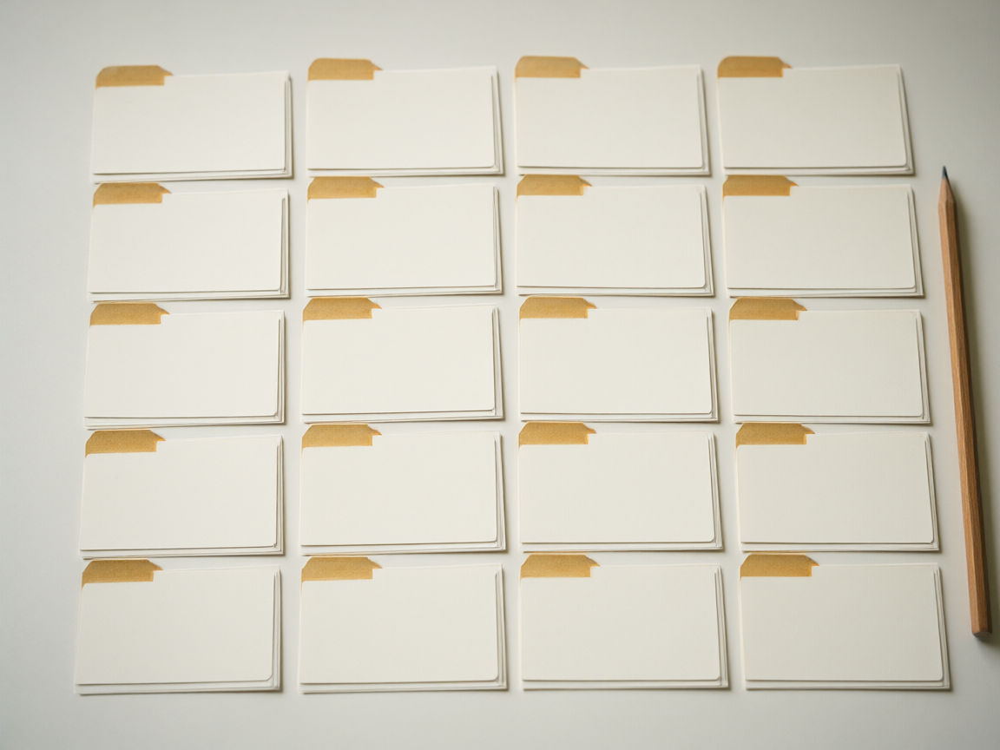

An archive of the drops
Every drop. In order. 4,966 of them.
All 4,966 numbered Q drops, #1 on 28 October 2017 through #4,966 on 28 November 2022 — dated, boarded, and kept in one place.
Type a number, a date, or a phrase. Enter opens the full ledger with your search applied.
Every drop, #1 to #4,966, in order, one place.
What the archive holds
- Drops held
- 4,966
- Coverage
- 28 Oct 2017 28 Nov 2022
- Span of the record
- 5 years, 1 month
Board history
Where the record moved.
The boards changed. Each move below is marked with what can be shown and what cannot.

-
28 Oct 2017 /pol/ Confirmed
Thread 146981635 survives on 4plebs.
-
31 Oct 2017 /pol/ Confirmed
“Bread Crumbs - Q Clearance Patriot” (147433975).
-
25 Nov 2017 /pol/ → 8chan Confirmed
Confirmed on the 4chan side (root 150864944). First signed post, tripcode !ITPb.qbhqo.
-
Nov–Dec 2017 /cbts/, then /thestorm/ Not yet recovered
-
Jan 2018 split into /greatawakening/ + /qresearch/ Not yet recovered
-
Aug 2019 8chan Confirmed
Goes offline 4–5 Aug 2019 — an infrastructure withdrawal, a site-level deplatforming, not caused by a drop.
-
Nov 2019 8kun Confirmed
8kun launches; Q continues on /qresearch/.
-
Today /qresearch/ Live
The board is live.
Method
How the record is held.
What is in the archive, how it was gathered, and what the gaps mean.

Where these records come from
Each drop is held with its number, timestamp, site, board, thread link and full original text. Where the native post still exists it is the source; otherwise the contemporaneous archive is used.
The working order is 4plebs for the /pol/ years, dChan, and 8kun itself for the later ones. A dead thread stays pointed at the URL as originally posted — the nearest archived capture sits beside it, never swapped in as if it were the original.
What “not yet recovered” means
A board move can be known to have happened and still leave no retrievable trace. A row marked not yet recovered means we know the move occurred and we have not yet found a surviving copy of what was posted there.
It stays marked. It is not filled in, estimated, or reconstructed from memory.
The earliest posts carry no tripcode
The drops of October 2017 carry no tripcode in the record. Labelling them “Q posted” is a retroactive attribution — it is how the archive refers to them now, not a signature that was there at the time. The first signed post comes on 25 November 2017.
The page says this plainly rather than implying a signature the record does not contain.
The full record
All 4,966 are in the ledger.
Every number, every date, every board, with the full text of each drop.